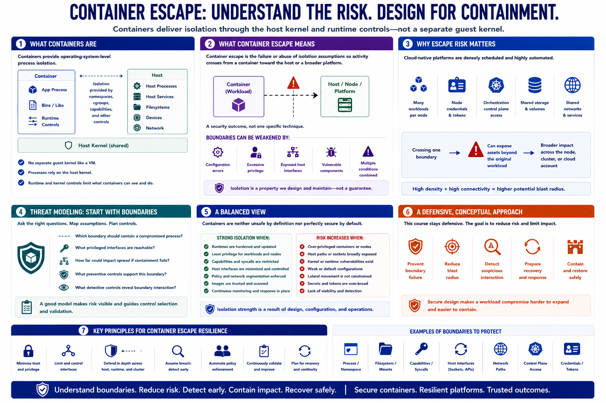

What Is Container Escape?
Connecting to LMS... Progress: in progress

Narration
Containers provide operating-system-level process isolation. Unlike a full virtual machine, a typical container does not bring a separate guest kernel. Its processes rely on the host kernel while runtime and kernel controls limit what those processes can see and do.
Container escape is the failure or abuse of those isolation assumptions so activity crosses from a container toward the host or a broader platform. The phrase describes a security outcome, not one specific technique. The boundary may be weakened by configuration, excessive privilege, exposed host interfaces, vulnerable platform components, or several conditions combined.
Escape risk matters because cloud-native workloads are densely scheduled and highly automated. A host may run several applications, hold node credentials, connect to orchestration services, and access shared storage or networks. Crossing one boundary can therefore expose assets beyond the original workload.
Threat modeling asks which boundary should contain a compromised process, what privileged interfaces are reachable, and how far impact could spread if containment fails. It also identifies which preventive and detective controls support each assumption.
The model should not assume that containers are unsafe by definition or perfectly secure by default. Containers can provide strong practical isolation when workloads, runtimes, nodes, identities, and orchestration policy are designed and maintained as a system.
This course stays defensive and conceptual. The objective is to prevent boundary failure, reduce blast radius, detect suspicious interaction, and prepare recovery. Secure design makes a workload compromise harder to expand and easier to contain.